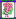

「シーアルラォティ」と発音する。十二落抬は「十二枚を落抬（副露した）」の意。十二露底とも書くが、同じ意味だ。１２枚、すなわち４メンツを副露して単騎待ちになるので四副露単騎（スーフーロータンチー）とも呼ばれる。
日本では分かりやすく裸単騎と呼ばれる。しかし日本では裸単騎でアガっても、単に「そういう状態でアガった」というだけのことだが、中国古典麻雀では一翻役くらいの価値のあるアガリであった。また現在の中国公式ルールでも全求人（チャンチューレン）という名称で４点役として採用されている。
全求人は「全部、他人に求める」という意味。そこで単騎待ちをツモアガリしてしまうと、厳密には全求人ではなくなる筈だが、統一ルールではツモアガリでもＯＫとなっている。ま、細かいことはどうでもいっか。(^０^；
昔の農家、よく鶏が屋根の上で羽ばたきながら刻（とき）を告げていた。裸単騎の状態が、この鶏の姿に似ている。そこでを裸単騎でアガった場合は、特に金鶏独立（チンチートーリー）、または金鶏和（チンチーホー）といって、もっと点数が増えたルールもあった。
このほか十二落抬の別名としては、唯一単騎とか大吊車、あるいは全倒鋪、単騎受困なんて別名がある。
日本では裸単騎のほかにヌード単騎なんて呼ばれることがある。裸単騎だと何とも思わないが、ヌード単騎だとなんとなくなまめかしい（笑）
この前、サイトをあちこち覗いていたら、どっかの掲示板で、スッポンポンと言う表現を見かけた。このスッポンポンは「四 々」と書き、４つポンした単騎待ちの場合を言うということであった。あまりにもピッタリな名称だったので感心した。(^0^) 々」と書き、４つポンした単騎待ちの場合を言うということであった。あまりにもピッタリな名称だったので感心した。(^0^)
英・Totally Revealed（全部さらした）
|